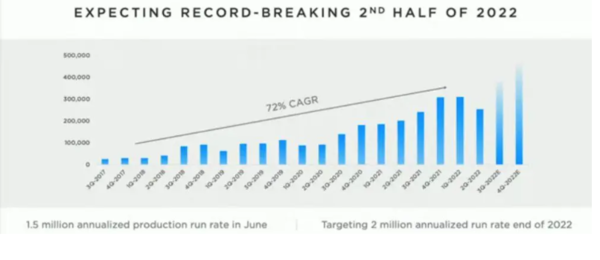

2019-08-22 03:55:00
《觀察者網》的軍事部門，素來有最非理性的讀者群。這固然和軍迷習慣於一般軍事論壇互相亂噴的文化有關，《觀察者網》軍事編輯做出錯誤示範也難辤其咎。這裏我指的是席亞洲，他不但喜歡做人身攻擊，而且還一再吹噓共軍已經天下無敵這種明顯的謬論，所以我用來形容香港和台灣媒體的“即不專業，也不中立，更不誠實”這句話，也適用在他身上。
昨日我一個隨意的留言，引發了關於這件事的互動討論。雖然沒有到達我普通博文的標準（因爲道理太淺顯，部落格的老讀者應該都已經視爲理所當然），既然已經寫下來了，索性也轉載在這裏。
============================================================
昨天我在女俠獨孤雯的文章（參見http://user.guancha.cn/main/content?id=161723）下，留了一個評論；原本覺得不是很重要的議題，也就寫得很簡單。後來發現這些軍迷群衆和我平常的讀者沒有很大的交集，一些我已經强調過幾百次的道理對他們來說很陌生，所以在這裏澄清一下。
首先，沒有人永遠都是對的，只要是根據事實證據來做理性的邏輯推演，我們就應該給予尊重。如果有相反的意見，既然作者已經把推理過程詳細解釋了，那麽儘可以就事論事指出邏輯錯誤之處。這是一個互相切磋的過程，個人初始結論的對錯不要緊，重要的是論證必須遵循嚴謹的邏輯。但是如果不做邏輯推演，直接下結論，那就是空喊口號，浪費大家的時間。如果連結論都懶得敘述，直接做人身攻擊，這樣的噴子不只是沒有貢獻，而且是負面的存在，妨礙了衆人格物致知的努力。
女俠獨孤雯是資深軍迷，他的意見並非完全不值一看。這次我覺得他的論據有可取之處，不過他在文章中已經做了詳細論證，我就沒有越俎代庖，只簡單地補充了兩句。至於後面對席亞洲論證態度的評論，則是因爲他向來對相反意見會做前面所述的非理性反應，一個很新的例子是兩周前侯知健和炮霸之間的爭論。
侯知健也是資深軍迷，我對他的文章很熟悉；他的結論不一定是對的，但是我很欣賞他的科學態度，在做任何結論之前，一定會給出詳細的事實根據和邏輯論證，這次也不例外。然而我對他們的話題（炮彈的設計和製造細節）沒有興趣，也就沒有去找炮霸的回應來看。既然如此，我自然不會試圖評論他們誰是誰非。
幾天後，我在另外一篇文章的評論區，看到有讀者問席亞洲的意見。他直接對侯知健做了人身攻擊，而給出的唯一理由是他和炮霸熟。這讓我想起去年我試圖更正他一個錯誤論點的時候（參見前文《現代穿甲彈原理簡介》），他也是直接跳進人身攻擊的模式。
我認爲這是非常不妥的。正如前面所述，任何公共討論應該以理性和客觀的態度來進行。脫離邏輯基礎的結論沒有實際意義，而人身攻擊更是損害公眾利益的不當行爲。
此外，席亞洲作爲《觀察者網》的雇員，在《觀察者網》發言就負有額外的責任。一般的讀者，只要不是匿名，那麽不當發言的後果只是自身的名譽，在自作自受的前提下，可以享有比較高度的自由。但是雇員是公司的代表，在公司自己的網站上不當發言，損害的不止是個人名譽，而且是雇主的公信力，這時他的行爲就必須滿足更高的標準。
這種職場要求的高標準，既不是傳統的私人道德，也不是面對國家社會的公德，而是一般所謂的專業態度或者職業道德。一個經濟體要做產業升級，步入有高附加價值的工業，從業人員是否有足夠的專業態度，是成敗的決定因素之一。
一般的軍事論壇是公社性的組織，版主不只是雇員，也同時具有股東的身份，他們要亂噴，雖然不雅，但並不是專業道德問題。《觀察者網》不是軍事論壇，它的雇員如果自認是版主，可以任性而爲，這在職業道德上是有虧的。
至於女俠獨孤雯想要批評的那篇席亞洲文章（參見http://user.guancha.cn/main/content?id=160892），其實最大的問題還不在獨孤雯所提的有關戰略空軍的事，而在於席亞洲假設美國只能用打敘利亞的同樣辦法來攻擊中國。80發導彈打一個機場，是因爲當時美軍有遠超過80發導彈，而總統所要求的目標只有一個。如果中美發生全面戰爭，美軍可以打擊的高價值目標太多了，自然不可能把那麽許多導彈浪費在一個機場上。
把眼光放得更大一點，席亞洲也假設美軍會用中方第一波集火攻擊美軍基地的方式來回擊中方的軍事基地，可是正因爲中方的優勢在於腹地廣，美軍的前綫卻被局限在少數狹小的島嶼上，美方的最佳策略當然不會是對稱的。他們應該要先封鎖遠洋，然後逐步壓縮中國的海空軍，進行長期的消耗戰。在這樣的策略下，席亞洲的算術完全不適用。
【原後註】正文發表之後，發現很多讀者忠言逆耳，留言不著邊際，尤其對我說獨孤雯的文章一般是值得一看的這句話大做文章，顯然沒有看懂主旨，我再解釋一次：正文裡面已經說過了，初始結論對錯不重要，重要的是態度。
至於我閱讀材料的選擇，確實比一般人廣泛得多，而且標準不但不在於他的論點是否從眾，反而是思考越與眾不同的，只要還有邏輯脈絡，就越可能有啟發我自己新思路方向的價值。
做研究，切忌先定下立場（例如席亞洲和他的粉絲所相信的共軍已然天下無敵論），然後只聽符合預設立場的聲音；這是我做精確預測的秘訣。我在最近討論載人登月的文章已經解釋過了，一個人必須先決定閱讀的目的，然後自然種瓜得瓜、種豆得豆：如果是為了娛樂自己，只接受同樣立場的文章，那麼自然能得到的，就只有一次性的爽感，亦即台灣所謂的自我感覺良好。
這種閱讀目的的選擇，並不只對自己未來的思考層次有影響，而事實上正是所謂社會風氣和輿論環境的來源與基石。我在上個月回應張文木教授的那篇評論（參見前文《三談中美貿易戰》【後註二】），結論是亡國的學者來自亡國的讀者，就是這個意思。大陸讀者所常詬病的台灣輿論界，正是循這條路高度腐化的後果，所以你們應該自問，是否有五十步笑百步的問題。我在評論香港動亂的視頻（參見https://www.youtube.com/watch?v=TihkL4zmwOA&t=8s）裡也提到，香港會沉淪至此，其媒體界極度追求一般讀者的短暫爽感而放棄對事實和邏輯的尊重，是因素之一。
還有，閱讀文章必須分清楚主幹和枝節。這篇正文的主旨是研究和寫作的態度，次要的評論是美軍的策略遠遠不會如席亞洲所能想像的那麼腦殘，所以他那三篇文章的主旨結論是完全錯誤的。至於對獨孤雯的身份評價，和主要、次要論點都無關，專注在這種枝微末節上、無限上綱，顯然是為了逃避接受主要、次要結論的自然心理反射動作。人也是動物，但卻是理性的動物，縱容本能性的天然反射來壓制理性思考，並不是提升自身思辨能力的好方法。
這些道理，我在我的博客都已經說過許許多多遍了，它們其實就是作為知識份子的基本修養標準。我一再說我文章的目標讀者是知識份子，其意義也正在於此。
【後註二，2022/06/17】昨天上《龍行天下》（參見《王孟源斷言：「德法義」若調停失敗，「五大城」將難逃戰火！》；順便解釋一下，Scholz etc當然會順便私下對Zelensky重複美方早已公開宣佈過的新立場，亦即“准許”烏克蘭割讓國土來追求和解，唐湘龍所提Zelensky擺臭臉便由於此；但既然俄烏雙方根本沒有興趣立即止戰，所以這趟訪問並沒有實質上的“調停”可能，只有作秀的意義），我借用了幾分鐘時間，討論新一起席亞洲公器私用的惡行，其用意在於博客不是大衆媒體，要讓《觀網》内部人員注意到這類事件，《龍行天下》更合適。因爲唐湘龍人忙，節目前是最後一分鐘才就位，沒有機會提前溝通，臨時吃驚，並不代表他有所反感。事實上，前幾天通過電郵交換節目題材的時候，我曾建議避免刺激非理性聽衆的項目，他反過來說刺激更好。
至於我批評席亞洲此事的用意和背景，依博客的邏輯論證規則，和是非對錯完全無關，原本沒有討論的必要。不過大衆傳媒節目的聽衆群結構和博客讀者不太一樣，所以自然出現許多轉移話題的狡辯留言；既然我已經決定長期出席這個節目，只好也盡力教育聽衆、駁斥若干人所作的謬論，因而必須暫時降低到接近這些謬論的水平來説話，並不是要放棄既有的科學方法和辯證原則，請博客讀者留意。以下是幾個基本的事實：1）我作爲《觀網》的專欄作家，從沒有想要發表過純軍事類的文章，也就沒有直接或間接和專責軍事編輯的席亞洲打過交道；換句話説，完全沒有私怨。2）我挑席亞洲做個人批評，並不是因爲他不學無術，也不是因爲他習於造假説謊（那些討論完全就事論事，不屬個人批評），畢竟這些惡劣習性是大陸和台灣軍事論壇的日常；我的批評所針對的，是公器私用，而且是反復的公器私用。3）我覺得有必要在大衆媒體公開高調地討論此事，有五個考慮：席亞洲是慣犯（參見正文）、自己嫉惡如仇的個性（這一點是那些噴子最無法理解的，他們只知道私怨和面子；而博客向來歡迎指正錯誤）、對《觀網》的珍惜和失望、與當前河南賦紅碼事件的類似巧合、以及和潘建偉、王頤芳、丘成桐等人作爲的比照（沒有機會談到）。4）有些漿糊腦袋的留言，甚至指責我也“公器私用”，這只在我是唐湘龍雇員的前提下才能成立，否則我是他的客人、不是屬下，在節目裏的言論和作爲不代表他的組織，完全由自己負責；照理説這是小學生都應該懂的道理，但在英美幾百年“言論自由”的思想扭曲下，大衆媒體上討論公共事務聲量最大的，正是這一群智商不到六歲（我以往反復解釋過，人腦到六歲應該開始有基本的邏輯思維能力）的人物，參見前文《爲什麽事實與邏輯對群衆無效？》中有關DK曲綫的討論。
【後註三，2022/08/11】《觀察者網》的水準真是越來越讓人搖頭：剛剛看到這篇由理論上是專業汽車記者所寫的文章（參見《特斯拉不香了？在华销量骤降，7月销量掉出前三》），作者根據Tesla上海厰七月内銷數據出現劇降而做出中國消費者排斥其產品的結論。剛好上周我已經在英文商業新聞網站和一些新能源博客上看到相關討論，所以略知究竟。事實真相是這個銷售額的劇變，來自兩個已知因素：1）上海厰在春天停工，再加上俄烏戰事引發歐洲汽油價格暴漲，引發Tesla產品在當地的供不應求現象，德國尤其嚴重；而六月復工之後，又優先滿足國内訂單，幾乎沒有出口，所以到了七月，不得不把產能轉向外銷。2）Tesla爲了大幅將年產能提升到100萬輛（參見《Tesla says it will turn Shanghai into ‘the world’s largest vehicle export hub’ with new factory》和《Tesla prepares to upgrade Gigafactory Shanghai to produce 21,000 EVs per week》），在七月關閉了部分生產綫來更換設備（這麽巨幅的產能提升，只停工不到一個月，原本已是世界首見），以致内外銷合起來算的總產量也略有下降。《觀網》的文章雖然提到第二點，卻一筆帶過，只輕蔑地說“可能有影響”，然後就全神投入自己的幻想世界中，反復誇耀國產電動車的强勢上升，反映在消費者不再青睞Tesla。尤其只討論内銷下降64%，不談出口數字單月環比成長2041%（是的，你沒看錯，20倍！），更是明顯的誤導性欺騙筆法。BYD是我在一年前大衆輿論還懵懵懂懂時就預言會一鳴驚人的公司，這一點敘事本身是正確的，然而它和Tesla七月内銷額的下降沒有一絲邏輯因果關係，所以文章的主軸依舊是胡扯。至於讀者討論，那更加是平行宇宙，徹底脫離現實，引發我回憶起研究《Daily Mail》讀者留言的經驗，以及美國憲法創寫人之一Gouverneur Morris的名句：“The mob begin to think and reason. Poor reptiles! They bask in the sun, and ere noon they will bite, depend on it.”
這裏另外還有一個巧合，就是兩天前，留言欄才剛討論了我人在海外所以必然對國内事務無知的錯誤論述，而這位連打電話給Tesla求證都懶得做的記者，恰恰人就在上海，而我所住的康州卻在地球的遠端，因而提供了一個很好的示範：在互聯網時代，新訊息即刻傳遍全球，決定認知是否正確深入的因素，不再是物理距離的遠近，而取決於搜索訊息的效率、和分析歸納的能力。這也是爲什麽我不必身在倫敦，一樣可以是全世界唯一一個提前半年揭穿英國政權更替過程幕後真相的人。
